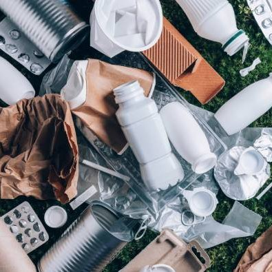
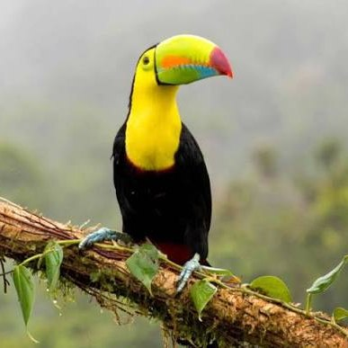
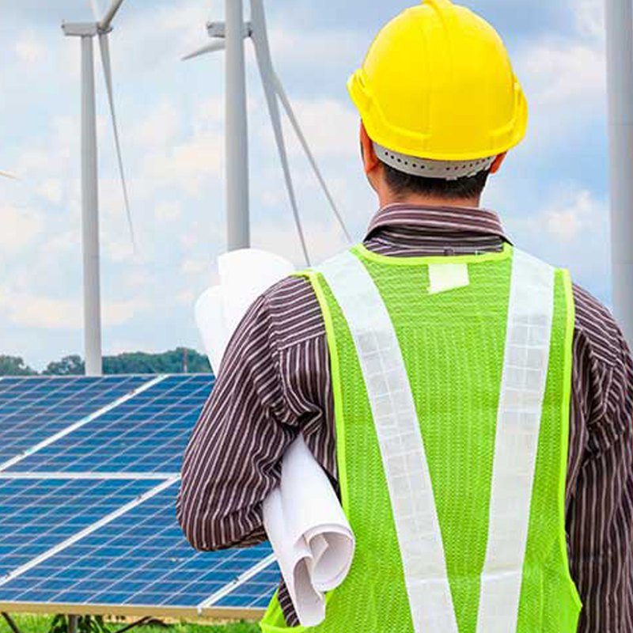
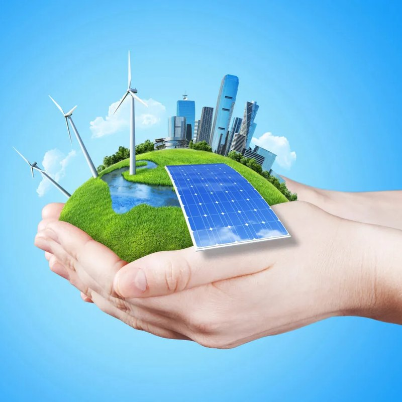
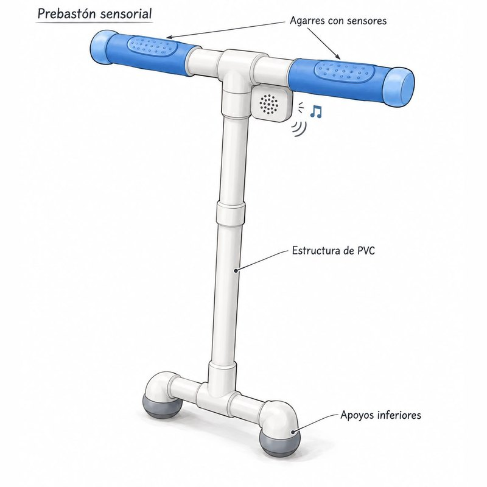

Principios e Indicadores de Sustentabilidad
La sustentabilidad considera el impacto de un proyecto a lo largo del tiempo. Explora sus principios, compara sus dimensiones y descubre qué indicadores permiten observar sus resultados.
Tres Principios para la Sustentabilidad
(Selecciona una idea para leer qué significa en la práctica)

Perspectiva del ciclo de vida y regeneración
Evaluar los impactos ambientales y socioeconómicos desde la extracción de materia prima hasta la disposición final, asegurando que las funciones de la naturaleza permanezcan intactas.
Dimensiones e Indicadores de Sustentabilidad
El desarrollo sostenible se fundamenta en el modelo del Triple Resultado (Triple Bottom Line), ampliado en contextos globales hacia la agenda de los ODS de la ONU.

Dimensión ambiental
Conservar la biodiversidad, mantener la integridad de los ecosistemas y utilizar de forma razonable los recursos renovables y no renovables. Busca mantener la tasa de regeneración natural por encima de la tasa de consumo.
Indicadores para observar
- Huella de carbono (kg de CO₂ emitidos)
- Huella hídrica
- Tasa de generación y reciclaje de residuos
- Consumo energético por unidad producida
📚 Referencias
- Artaraz, M. (2001). Teoría de las tres dimensiones del concepto de desarrollo sostenible. Ecosistemas, 10(3), 1–6. https://revistaecosistemas.net/index.php/ecosistemas/article/view/614/580
- Ramallo, M., Cardaci, K. F., & Costucica, L. A. D. (2017). El desarrollo sostenible (DS) en la formación de ingenieros: un nuevo campo para repensar la perspectiva CTS. Revista Tecnologia e Sociedade, 13(28), 114–129. https://doi.org/10.3895/rts.v13n28.3996
- Silvius, A. J. G., & Schipper, R. P. J. (2014). Sustainability in project management: A literature review. Business Strategy and the Environment, 23(1), 63–78. https://dialnet.unirioja.es/descarga/articulo/8747272.pdf
- UNESCO. (2021). Ingeniería para el desarrollo sostenible: Ricos datos, inteligencia artificial y ciudades inteligentes. Organización de las Naciones Unidas para la Educación, la Ciencia y la Cultura. https://unesdoc.unesco.org/ark:/48223/pf0000375634_spa.locale=en
Ingeniería y Sustentabilidad: Construyendo el Futuro
Cómo la tecnología y el diseño técnico protegen el planeta y mejoran la sociedad.
La ingeniería no solo crea tecnología; transforma nuestra relación con el entorno. A través de la innovación y la optimización de recursos, los ingenieros aplican principios e indicadores de sustentabilidad para satisfacer las necesidades presentes sin comprometer las de las futuras generaciones.

3 Ejemplos de la Ingeniería en la Sustentabilidad
(Selecciona un ejemplo para ver en qué consiste y cómo se conecta con la sustentabilidad)

Transición hacia Energías Renovables
¿En qué consiste?
Diseño e implementación de parques eólicos, plantas solares y redes eléctricas inteligentes (smart grids).
Conexión con la sustentabilidad
- Ambiental Reduce drásticamente la huella de carbono al sustituir combustibles fósiles.
- Económica Disminuye el costo por tonelada de CO₂ evitado y genera modelos energéticos rentables a largo plazo.
Conclusión
La ingeniería es el puente fundamental para materializar el desarrollo sostenible. Al integrar métricas ambientales, económicas y sociales en cada diseño, los ingenieros transforman los retos globales en soluciones técnicas viables y sostenibles en el tiempo.
📚 Referencias
- Ellen MacArthur Foundation. (2013). Towards the circular economy Vol. 1: An economic and business rationale for an accelerated transition. https://www.ellenmacarthurfoundation.org/assets/downloads/publications/Ellen-MacArthur-Foundation-Towards-the-Circular-Economy-vol.1.pdf
- World Commission on Environment and Development. (1987). Our common future. Oxford University Press. https://sustainabledevelopment.un.org/content/documents/5987our-common-future.pdf
Bastón asistencial: tecnología al servicio de la autonomía
(Selecciona un eje para ver cómo el reto se conecta con la sustentabilidad)

Compromiso Social y Solidaridad
Atención a necesidades reales
-
Impacto directo en la comunidad
El desarrollo del bastón asistencial responde a una necesidad crítica de accesibilidad para personas con discapacidad visual en Ciudad Juárez, colaborando directamente con el CEIAC (Centro de Estudios para Invidentes A.C.).
-
Empatía en el diseño
La tecnología no se creó de forma aislada, sino orientada a resolver un problema social tangible, priorizando la seguridad y autonomía de los usuarios.